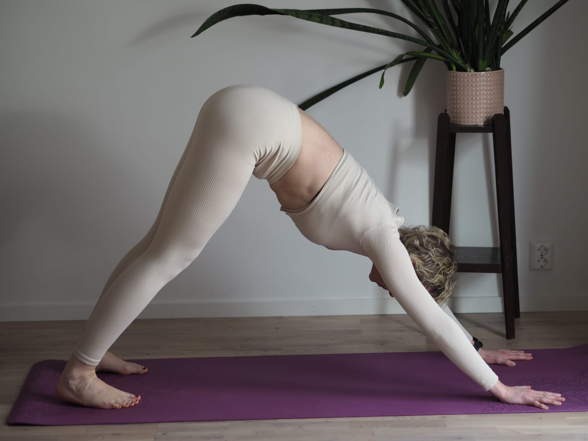
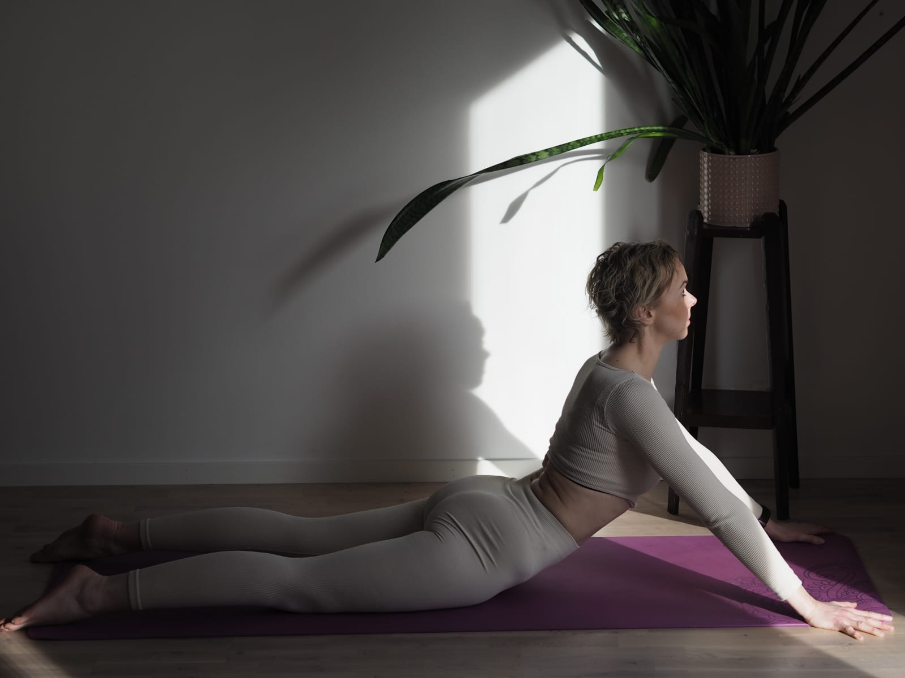
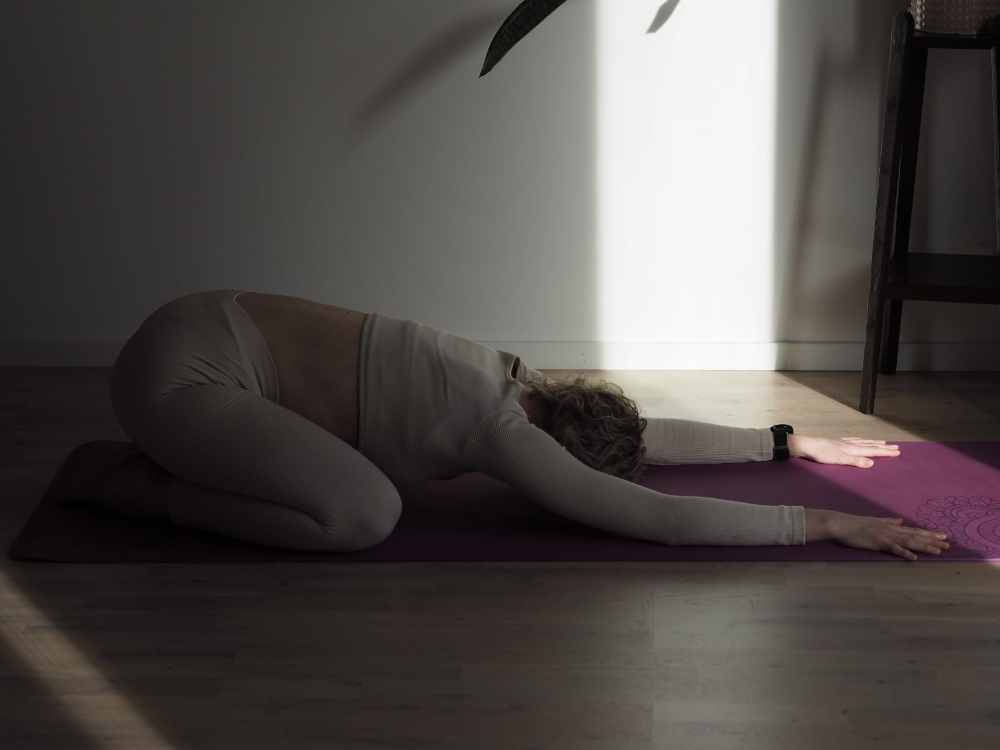
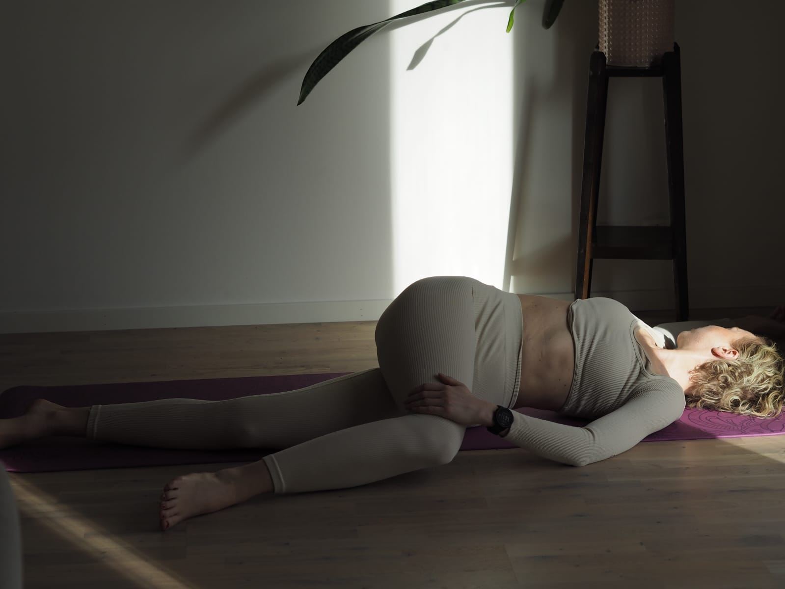
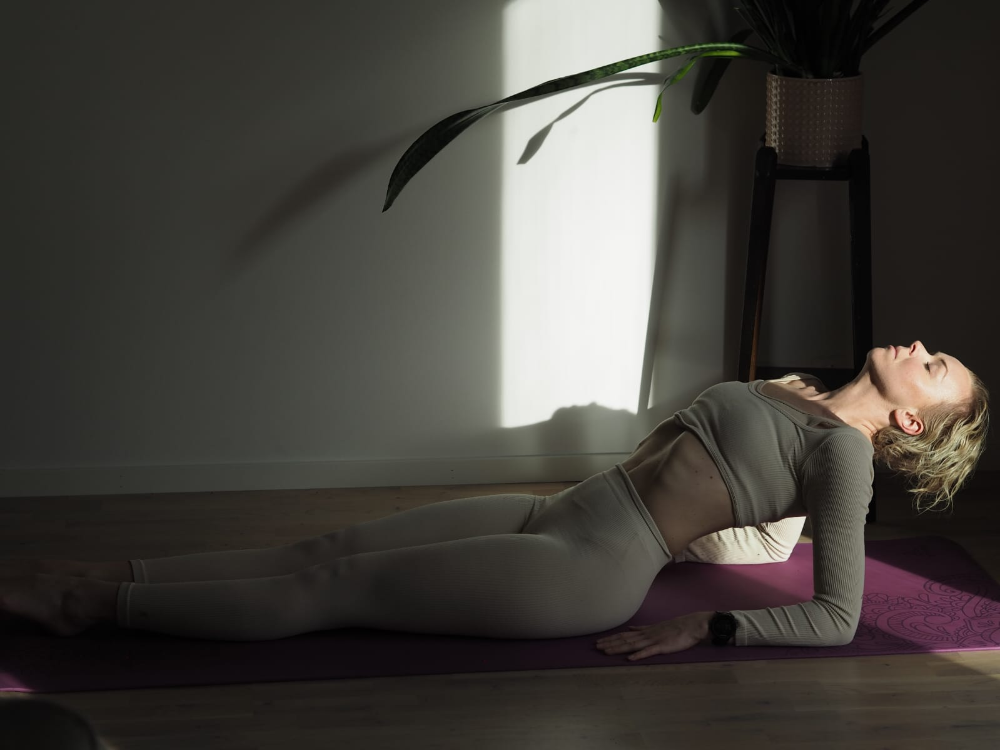
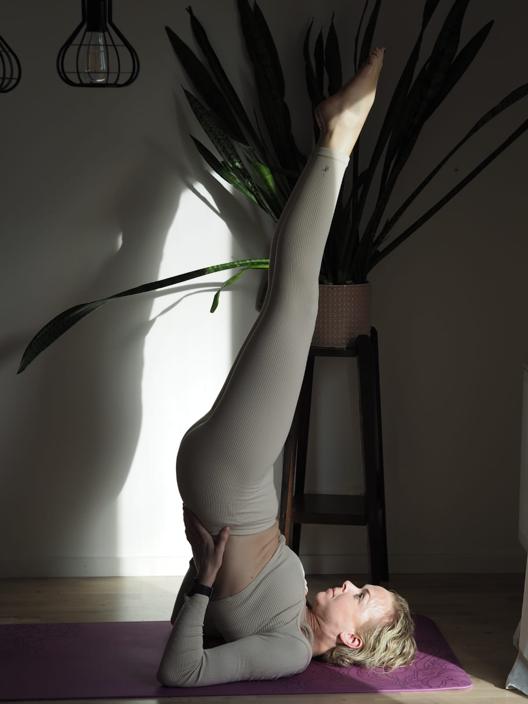
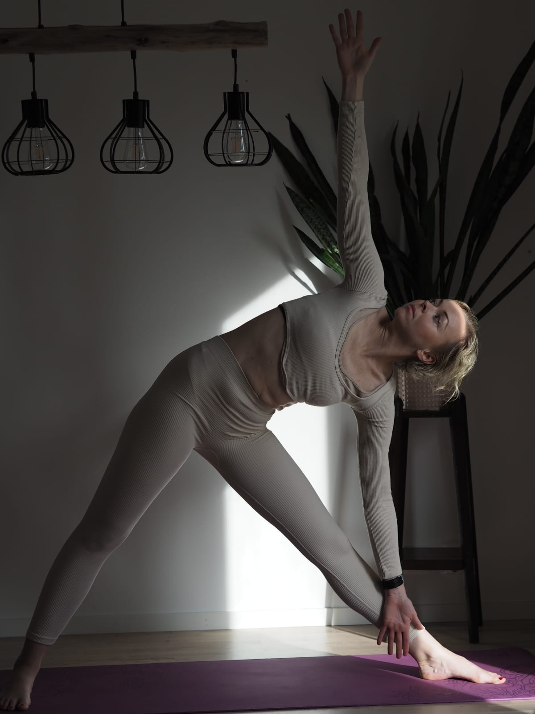
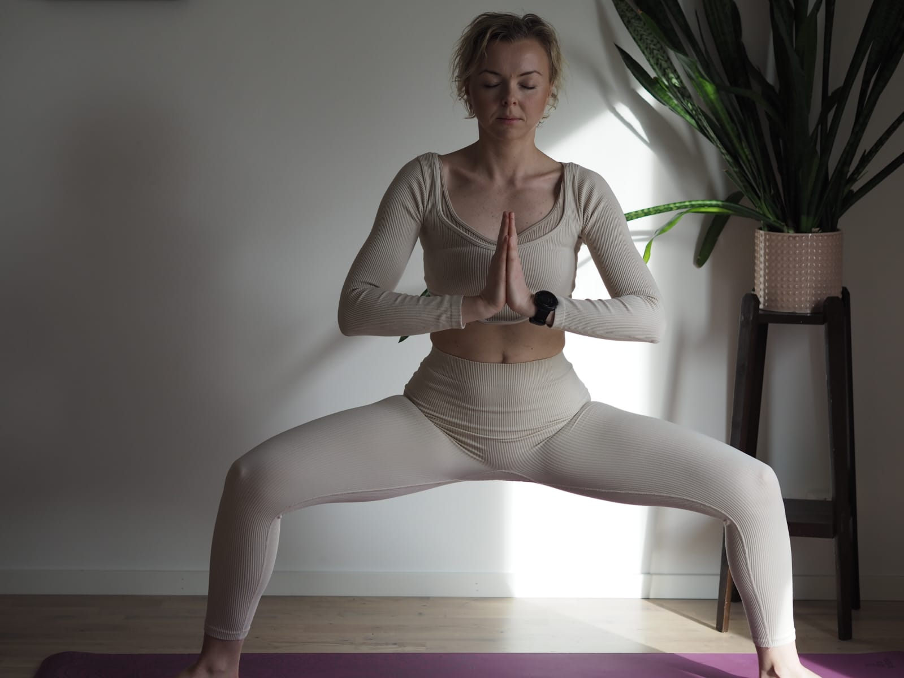

Benefits of Yoga:
Yoga improves strength, flexibility and balance. It helps reduce stress and anxiety, calming your body to provide better sleep. Yoga can also help relieve back pain and improve blood circulation.
Types of Yoga:
- Yin Yoga
- This simplest yoga pose teaches one to stand with majestic steadiness like a mountain.
- Vinyasa Yoga
- This simplest yoga pose teaches one to stand with majestic steadiness like a mountain.
- Power Yoga
- This simplest yoga pose teaches one to stand with majestic steadiness like a mountain. The word 'Tada' means a mountain, that's where the name comes from
- Hot Yoga
- This simplest yoga pose teaches one to stand with majestic steadiness like a mountain. The word 'Tada' means a mountain, that's where the name comes from
- Prenatal Yoga
- This simplest yoga pose teaches one to stand with majestic steadiness like a mountain. The word 'Tada' means a mountain, that's where the name comes from
- Acro Yoga
- This simplest yoga pose teaches one to stand with majestic steadiness like a mountain. The word 'Tada' means a mountain, that's where the name comes from
- Aerial Yoga
- This simplest yoga pose teaches one to stand with majestic steadiness like a mountain. The word 'Tada' means a mountain, that's where the name comes from
Yoga Positions:
-
Downward Dog Pose
- Downward Dog Pose strengthens your whole body, stretches legs and spine and can helps stimulate blood circulation.
- 
-
Upward Facing Dog Pose
- Upward Facing Dog Pose opens up your chest and lungs while strengthening arms, shoulders and upper back.
- 
-
Child Pose
- The Child Pose stretches hips, thights, lower back, knees and ankles. It can help calm the mind and relieve tiredness.
- 
-
Spinal Twist Pose
- The Spinal Twise Pose twists and stretches your back muscles along your spine allowing the spinal disks to rehydrate or realign.
- 
-
Fish Pose
- The Fish Pose opens up the muscles in the chest and neck area while energizing you.
- 
-
Shoulderstand Pose
- The Shoulderstand Pose stretches your neck and shoulders. Being in this pose can help improve digestion and reduce fatigue.
- 
-
Triangle Pose
- The Triangle Pose strengthens leg and back muscles while stretching them aswell.
- 
-
Goddess Pose
- The Goddess Pose opens up the hip and chest area while strengthening core muscles in the lower body.
- 